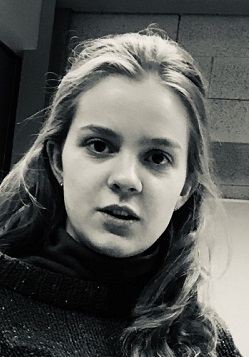

Malena McCrossan is from Flint, Michigan. She was raised on the streets and developed her name “Muscles” during her underground fight club days. In 2005, Malena became a born-again Christian, and moved to Lindsay, Ontario. In Lindsay she started her own NBA team where she was the only player on the team. Malena is often referred to as Lebron James 2.0. She goes to Fleming College and is taking a post-graduate GIS Application Specialist program. Her dream some day is to become a world class boxer. Or maybe, to become a city planner. Malena is an essential asset to our team, and we wouldn’t be able to succeed without her.
Malena McCrossan is from Flint, Michigan. She was raised on the streets and developed her name “Muscles” during her underground fight club days. In 2005, Malena became a born-again Christian, and moved to Lindsay, Ontario. In Lindsay she started her own NBA team where she was the only player on the team. Malena is often referred to as Lebron James 2.0. She goes to Fleming College and is taking a post-graduate GIS Application Specialist program. Her dream some day is to become a world class boxer. Or maybe, to become a city planner. Malena is an essential asset to our team, and we wouldn’t be able to succeed without her.
Grayson Mortimer was born and raised in Oakville, Ontario. Grayson was born with a rare condition that caused him to grow a mustache at the age of 6 months. Grayson has moved to Lindsay to find a cure for his mustache disease. But, instead he has decided to attend Fleming College and take the GIS Application Specialist program. Grayson’s dream is to one day find his mustache cure. Grayson is an essential asset to our team, and we wouldn’t be able to succeed without him.
 Chris Noakes was born and raised in Collingwood, Ontario. For 18 years he lived on the road as a one-man travelling band. He travelled across the globe until he finally found the best town in the entire world: Lindsay. Chris decided to live in Lindsay and attend the GIS Application Specialist program at Fleming College. Here Chris will hopefully combine his travelling band skills with his new-found GIS skills. He will be the first one-man-band-cartographer. Chris is an essential asset to our team, and we wouldn’t be able to succeed without him.
Chris Noakes was born and raised in Collingwood, Ontario. For 18 years he lived on the road as a one-man travelling band. He travelled across the globe until he finally found the best town in the entire world: Lindsay. Chris decided to live in Lindsay and attend the GIS Application Specialist program at Fleming College. Here Chris will hopefully combine his travelling band skills with his new-found GIS skills. He will be the first one-man-band-cartographer. Chris is an essential asset to our team, and we wouldn’t be able to succeed without him.

Mara Van Meer was born and raised in Dallas, Texas. As a country music star, Mara made it big with her hit single, “G.I.S., more like G.I.YES”. However, one day she no longer found any joy in making country music, so she moved to Lindsay, Ontario. Here she started a new life as a brick layer, but later decided to enroll in the GIS Application Specialist program at Fleming College. Her dream is to one day rule the world. Mara is an essential asset to our team, and we wouldn’t be able to succeed without her.